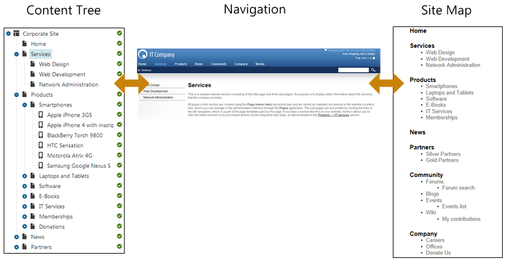

Defining website content structure
On this page, you can learn how to best store and organize data in Kentico.
Deciding how you're going to store content in your project
Kentico recommends storing data that you use on your website in the following ways:
As pages - a hierarchical structure in the content tree of the Pages application.
In module classes - suitable for storing large amounts of data and custom module related data.
More information on module classes.
In custom tables - suitable for storing large amounts of data in a flat structure.
More information on custom tables.
In media libraries - suitable for storing large files, not exclusively of media character, such as videos, high resolution images or packaged files.
More information on media libraries.
When should I use pages to store content?
Use pages as a content storage when you need:
Hierarchical structure - for example, when storing news articles or products:
Store
Coffees
Coffee product 1
Coffee product 2
...
Brewers
Accessories
Grinders
E-books
other store sections
Workflow - you require to use workflow for your content. Module classes and media libraries don't support workflow.
Item-level permissions - you require to configure access permissions on individual content item level. Pages allow you to configure access control lists for this purpose.
Multilingual content - pages allow you to store content in different languages and manage its translations.
Please note: Articles linked here may not reflect the latest version of Kentico. Please report any issues with these links using the feedback form at the bottom of this page.
Pages are stored in the content tree. The content tree defines the navigation and site map of the website:

Navigation and site map defined by the content tree
Limitations of using pages for storing content
We recommend limiting the number of pages in the content tree to 500 000 to preserve performance.
The limit depends largely on how the system is used and configured. If you mainly use the system for read operations, such as displaying the content on the Live site, the system will be able to handle more pages. Having multiple editors make very frequent changes to content in the administration interface is, on the other hand, more demanding on the system's resources.
We recommend that each item (page) in the content tree have at most 1000 direct child pages. This is something we recommend taking into consideration from the very beginning of your development process. See setting up content tree structure for a large number of pages.
The same limitations apply to the number of linked pages and pages in different cultures.
When displaying data on the live site, we recommend configuring listing web parts to display content tree sections that contain 100 000 descendant pages (pages in all levels) at most.
The 'Alias path' for each item in the content tree cannot exceed 450 characters in length. Each item in the tree has an alias path consisting of all of the items leading to the item in the content tree. For example the alias path leading to a product can be /Store/Coffee/Nicaragua-Dipilto for a product called Nicaragua Diplito. The alias path value of the field is stored in the CMS_Tree database table's 'NodeAliasPath' field, which is set to 450 characters.
Note: The limitations largely depend on the overall configuration of the system.
Setting up content tree structure for a large number of pages
When you plan on storing and creating a large number of pages, consider structuring the content tree into smaller segments. This can help you avoid reaching the recommended limit of 1000 child pages under a single page. For example, articles can be structured based on the day they were created on.
Articles
2015
March
1
Article1
Article2
...
2
3
...
31
April
1
...
30
May
If you plan on creating an even larger amount of content, you can structure the content tree even further.
Articles
2015
March
1
Morning
Article1
Article2
...
Afternoon
Article3
Article4
Evening
Article 5
Article 6
2
3
...
31
April
May
The 'Alias path' for each item in the content tree cannot exceed 450 characters in length. See limitations of using pages for storing content.
Note: while this helps you structure content so that you don't exceed the recommended 1000 child pages limitation, the total number of pages in the system will increase. Consider the recommended maximum number of pages in the system as well.
Resolving performance issues caused by storing a large number of pages
See Optimizing website performance for information on how to resolve issues with website performance. One approach for reducing the amount of pages stored in the content tree is setting up archival for outdated pages.
Structured pages
While all items in the content tree of the Pages application are pages, there are two types of pages that you can distinguish. There are pages that are set to display content and they are displayed as menu items by default (this can be also customized). Examples of these are the /Home, /Products, /Services on the sample Corporate site. This behavior is enabled by editing individual Page types in the Page types application and enabling the Behave as Page (menu item) option.
The second type of pages are Structured pages, which contain structured data that is then displayed by pages that behave as menu items. Examples of these are the news items under the /News section of the sample Corporate Site.
Pages that are set to behave as menu items usually contain unstructured content in the form of editable regions that can be edited on the Page tab. Structured pages contain structured and typed data stored in page type-specific database tables and edited on the Form tab.
You will typically use structured pages when you need to display a list of items, such as list of news, list of products, etc.
Types of content stored in pages
There are two types of content stored within pages:
content stored in editable regions on the page
content stored in page fields
The following table compares both approaches:
|
|
Editable regions on the page |
Form tab |
|
Content structure |
Simple content structure, only text-based content. |
Complex content structures, typed data, such as text, date-time, numbers, etc. |
|
Validation |
Only basic validation rules for minimum and maximum length. |
Complex validation rules, including regular expressions and custom form controls with custom validation code. |
|
Display |
The content is displayed in the context of the page providing truly WYSIWYG editing. |
The content is displayed by controls or web parts using ASCX or XSLT transformations. |
|
Storage |
The content is stored in a single XML document in the page properties. |
The content is stored in a separate database table. Each field has its own column. The data can be easily modified using SQL queries or API. |
|
Examples of use |
Home page, contact page. Generally: pages with simply structured or unstructured, text-only content. The editable regions are usually used only in connection with pages of type Page (menu item). |
News, product specification, event details, job opening, anything that requires different, more complex fields for its content. Generally: pages with structured content where you need to separate content from design and keep the content in its original data type. The form-based content is usually used in connection with pages of type News, Product, Article, etc. |
When should I use module classes to store content?
Custom module classes allow you to store large amounts of content without the hierarchy provided by the pages. Use module classes when you need to:
Access the data via the UI, but without the need to represent the data in a hierarchical structure in the content tree.
Store large amounts of data in a flat structure using the standard data types (int, string, ...) and one-to-many data (radio buttons, drop-down lists).
Store data in a single language. The data can only be translated using localization macros.
Scenario
One specific scenario in which you can utilize module classes as a content storage is for page archival. That is, storing outdated pages that you don't need to display on the live site anymore. You are still able to access the page data but you don't have to clutter the content tree with unnecessary items.
Limitations of using module classes for storing content
Please be aware of the following limitations when deciding whether to use modules for storing content:
Data cannot be easily displayed on the live site. It is possible, but custom module classes don't have built-in listing web parts for displaying the content on the live site the way pages or custom tables do.
Workflow cannot be used for your data.
Versioning of the stored data is not supported by default.
The multilingual functionality that the system provides for pages is not available.
When should I use custom tables to store content?
Custom tables allow you to store large amounts of content without the hierarchy provided by the pages. Use custom tables when you need to:
Access to the data via the UI, but without the need to represent the data in a hierarchical structure in the content tree.
Store large amounts of data in a flat structure using the standard data types (int, string, ...) and one-to-many data (radio buttons, drop-down lists).
Display the data on the live site. Kentico comes with built-in web parts that allow you to display custom table data on the live site.
Limitations of using custom tables for storing content
Custom tables also pose certain limitations. Consider using custom tables for storing content if you don't need to:
Store binary stream data.
Use versioning for your data.
Store the same content in different languages.
Pages vs. module classes and custom tables
|
|
Pages |
Module classes |
Custom tables |
|
Can hold traditional data types (int, float, ...) |
|
|
|
|
Can hold binary stream data (files) |
|
|
|
|
Can hold one-to-many data (radio buttons, drop-down lists) |
|
|
|
|
Can be used as an E-commerce product |
|
|
|
|
Can be displayed by 'Listings' web parts |
|
|
|
|
Can be displayed by 'Navigation' web parts |
|
|
|
|
Workflow |
|
|
|
|
Versioning |
|
|
|
|
Multilingual content |
|
|
|
|
Hierarchical data structure |
|
|
|
|
Each record has its own URL |
|
|
|
|
Data can be accessed using API |
|
|
|
|
Importable / Exportable |
|
|
|
|
Performance |
|||
|
Recommended for large data sets when using flat data structure |
|
|
|
|
Number of database tables that store the data |
3+ |
1 |
1 |
|
Recommended for large binary data |
|
|
|
|
Binary data can be stored in file system |
|
|
|
*You can translate data using localization macros only.
**You can access custom table records via listing web parts and query string URL parameters.
When should I use media libraries to store content?
Media libraries are designed to store large files — not exclusively of media character — such as videos, high-res images or packaged files. You can access media library files without overhead as there is no need to query the database to access them.
Pages vs. media libraries
|
|
Pages |
Media libraries |
|
Recommended for large binary data |
|
|
|
Direct access to the data without querying database |
|
|
|
Number of database tables that store the data |
3+ |
2 |
|
Binary data can be stored in file system |
|
|